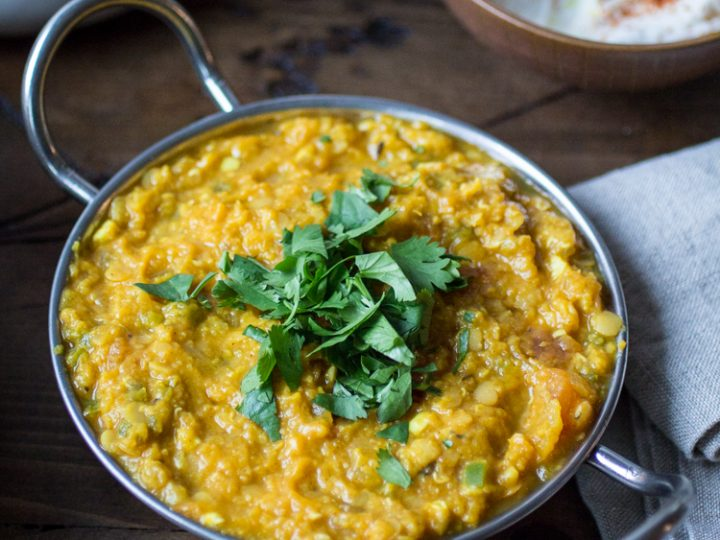

Lentil Dal

A classic Indian dish!
Ingredients:
- Red lentils (1 cup)
- Onion
- Chick peas (1 can)
- Sweet potato (1 small)
- Coconut milk (1 can)
- Turmeric (1 tsp)
- Garam Masala (1 tsp)
- Salt (to taste)
- Fresh Corriander
- Olive oil (1 Tbspn)
Steps
- Chop onion and cook until golden brow in a saucepan with the oil
- Add Turmeric and stir
- Pour in the lentils and stir
- Straight away add 1 cup of water, and the can of Coconut milk
- Bring to a simmer, and then add the Chick peas and Sweet Potato
- Cook until the sweet potatos are soft (25 mins or so)
- Chop Corriander and add to the dish as a garnish!